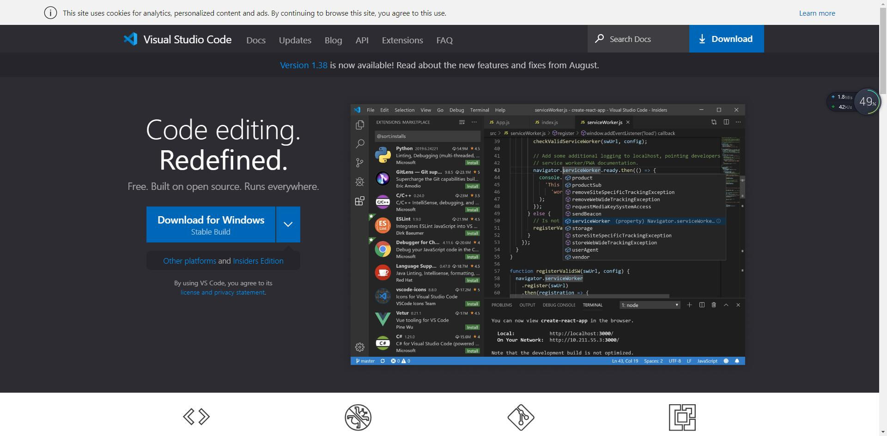
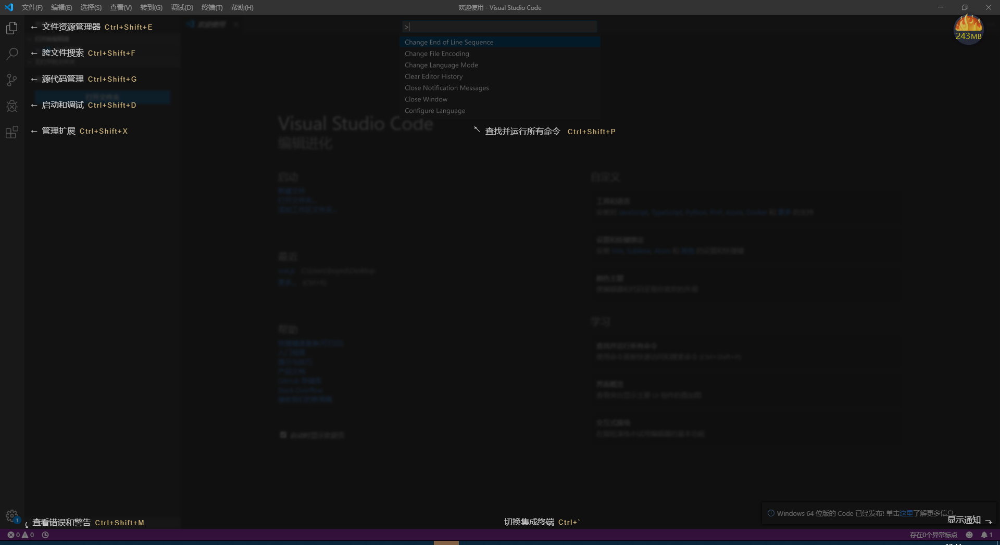
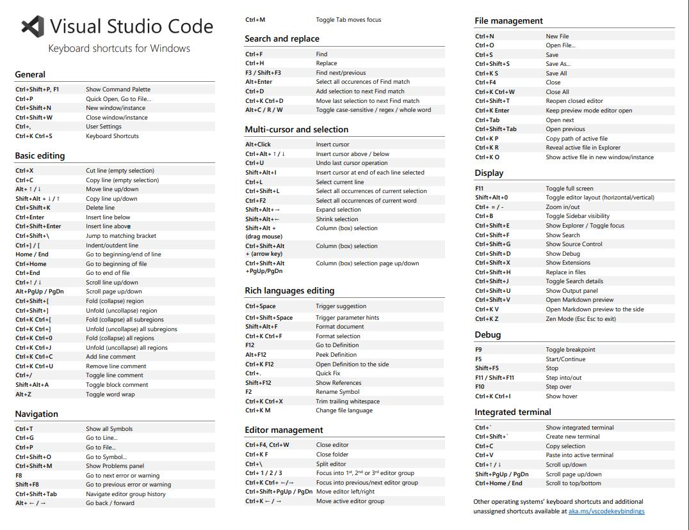

作为一名合格的程序员在学习任何编程语言前都必要熟练掌握两个基本技能：
一是基本的熟练键盘盲打，这是基本代码输入能力，打字速度太慢，代码输入效率就会太低。
二是对英语的有一定的掌握程度，不一定是要能达到英语4-6级能力，但起码对常见的编程方面的用到的单词要熟练掌握。
VS Code是微软推出的新一代免费开源的现代化轻量级代码编辑器，支持几乎所有主流的开发语言的语法高亮、智能代码补全、自定义快捷键、括号匹配和颜色区分、代码片段、代码对比 Diff、GIT命令 等特性，支持插件扩展，并针对网页开发和云端应用开发做了优化。VS Code跨平台支持 Win、Mac 以及 Linux，运行流畅，可以算得上是微软的难得良心之作。


Ctrl + Shift + E 资源管理器
Ctrl + Shift + F 搜索
Ctrl + Shift + G 源代码管理器
Ctrl + Shift + D 调试
Ctrl + Shift + X 插件扩展
F1 或 Ctrl+ Shift + p 打开命令面板
Shift + Alt + F 代码格式化
Ctrl+ F 查找
Ctrl+ H 查找替换
Ctrl+ N 新建文件
Ctrl+ S 保存
Alt + ↑ 或 Alt + ↓ 上下移动一行
Shift + Alt + ↑ 或 Shift + Alt + ↓ 向上向下复制一行
